Applied Survival Analysis
Chapter 1 - Introduction
Department of Biostatistics & Medical Informatics
University of Wisconsin-Madison
Outline
- Time-to-event data and examples
- Censoring mechanisms and implications
- Summarizing the raw data
\[\newcommand{\indep}{\perp \!\!\! \perp}\]
Data and Examples
What are time-to-event data
- A common type of outcome in medical studies
- Subjects followed from a predefined starting point: randomization, entry into study, birth, etc. until outcome event occurs or study ends
- Outcome event (endpoint): death, hospitalization, onset of disease, etc.
- Reliability test in engineering: failure of a machine part
- (Right) Censoring: incomplete data if event does not occur by the time study ends of subject drops out
- Only knows event time \(>\) (lies to the right of) censoring time
- Survival analysis: statistical methodology for censored data (any outcome events)
Example: Univariate event (I)
- German Breast Cancer (GBC) study
- Study population: 686 patients with primary node positive breast cancer
- Aim: evaluate effect of hormonal treatment with tamoxifen in addition to standard chemotherapy in reducing overall mortality
- Baseline information: age (years), tumor size (mm), number of positive lymph nodes, progesterone and estrogen receptor levels (fmol/mg), menopausal status, and tumor grade (1—3)
- Follow-up: median length 44 months
- 171 deaths \(\to\) exact survival times known
- 515 survived to end of study or dropped out \(\to\) censored (survival time \(>\) censoring time)
Example: Univariate event (II)
- German Breast Cancer (GBC) Study
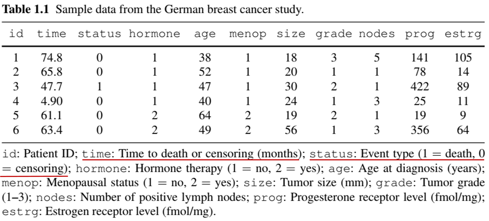
Example: Recurrent events (I)
- Chronic Granulomatous Disease (CGD) Study
- Study population: 128 CGD patients in a placebo-controlled randomized trial
- Aim: Assess effect of gamma interferon on incidence of repeated CGD infections
- Follow-up: median length 293 days
- From randomization to study end or dropout (no death)
- Number of infections per patient: maximum 7; minimum 0
- Challenge: correlation of recurrent events within patients
- Data in “long” format (multiple records per patient)
Example: Recurrent events (II)
- Chronic Granulomatous Disease (CGD) Study
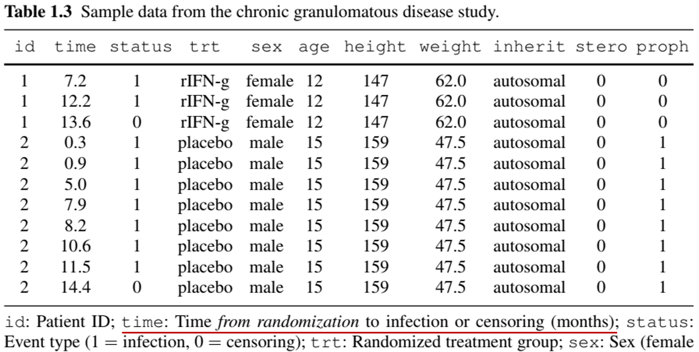
Example: Multivariate/Clustered Events (I)
Diabetic Retinopathy Study
- Study population: 197 high-risk diabetic patients in a randomized controlled trial
- Aim: Determine whether photocoagulation (a laser treatment) can delay the onset of blindness
- Study design: One eye randomly selected to received photocoagulation (by either xenon or argon); the other eye left untreated as control
- Challenge: Correlation between the eyes
Example: Multivariate/Clustered Events (II)
- Diabetic Retinopathy Study
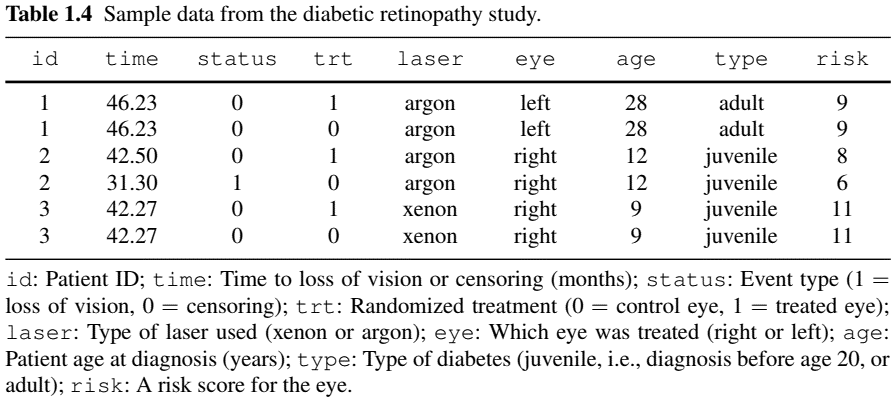
Example: Competing Risks (I)
- Definition: multiple event types; occurrence of one prevents others from occurring afterward
- Natural example: different causes of death
- Competing risk vs censoring:
- Both terminate follow-up
- Competing risk: part of the outcome; inference based on its presence
- Censoring: irrelevant to outcome; inference based on its absence
- Example: death from prostate cancer as main outcome
- Death from other (metastasized) cancers \(\to\) competing risk
- Death from traffic accidents \(\to\) censoring
Example: Competing Risks (II)
Bone Marrow Transplant Study
- Study population: 864 multiple-myeloma leukemia patients undergoing allogeneic haematopoietic cell transplantation (HCT)
- Aim: Evaluate risk factors for treatment-related mortality (TRM) and relapse of leukemia
- Competing risks: TRM defined as death in remission (i.e., before relapse); thus is precluded by relapse
- Risk factors: cohort indicator (years 1995–2000 or 2001–2005), type of donor (unrelated or identical sibling), history of a prior transplant, time from diagnosis to transplantation (<24 months, or ≥ 24 months)
Example: Competing Risks (III)
- Bone Marrow Transplant Study
- Why only one record per patient?
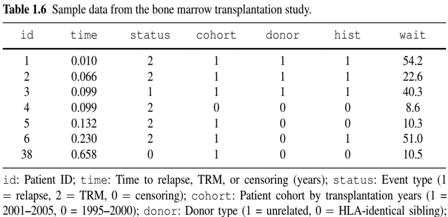
Example: More Complex Outcomes (Semi-competing risks)
- German Breast Cancer (GBC) Study
- Nonfatal event + terminal event (death)
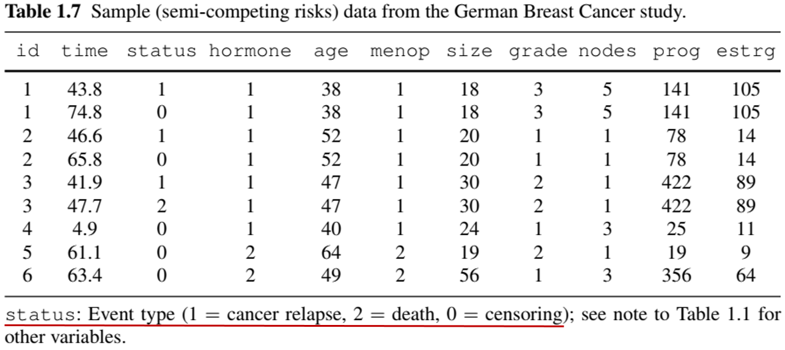
Example: More Complex Outcomes (with Longitudinal data)
- Anti-Retroviral Drug Trial
- Repeated measures of CD4 cell count + death
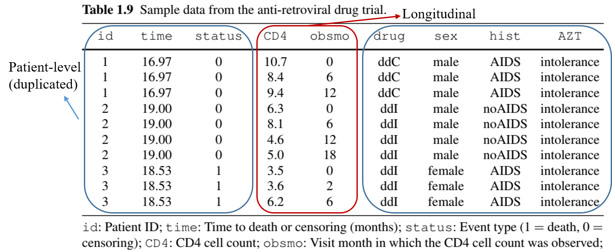
Example: More Complex Outcomes (Multistate process)
- Breast Cancer Life History Study
- Remission \(\to\) relapse \(\to\) metastasis \(\to\) death (can skip states)
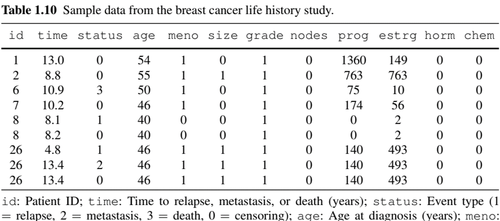
Example: Composite Endpoints(I)
- Composite endpoint: one with multiple components
- Recurrent/multivariate events
- (Semi-)Competing risks
- Longitudinal measurements
- Multistate processes
- Analysis of complex outcomes
- Marginal approach: models components separately
- Conditional approach: models components jointly
- Composite approach: combines components
- Progression/relapse-free survival (time to the earlier of progression/relapse or death)
Example: Composite Endpoints(II)
- Advantages:
- Concentrates information → Statistical efficiency
- No need for multiple testing adjustment
- A single measure of overall effect size
- Preferred for primary analysis of Phase-III clinical trials by
- US Food and Drug Administration (FDA)
- ICH (International Council for Harmonisation for pharmaceuticals)
- Challenges:
- Statistical efficiency (e.g., beyond first event)
- Scientific relevance (e.g., relative importance of components)
Censoring mechanisms and implications
Censoring Mechanisms
- Two mechanisms
- Study termination (administrative censoring)
- Loss to follow-up (LTFU, e.g., withdrawal, death from other causes)
Caution about censoring
Event/censoring time \(=\) time from starting point (e.g., randomization) to event/censoring (as opposed to time on the calendar)
LTFU may not be independent of outcome (e.g., sicker patients withdraw early)
Collect information on reason of withdrawal if possible
Censoring or competing risk? \(\leftarrow\) Domain knowledge
Censoring Mechanisms: Illustration
- Calendar time vs time synchronized by starting point
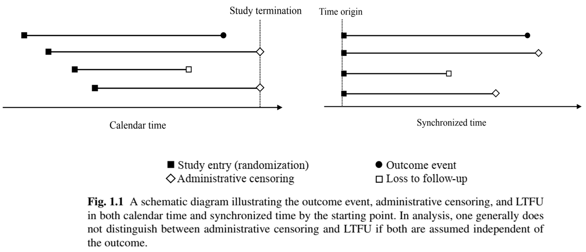
Statistical Implications (I)
- Censored observation
- Not completely missing!
- Partial information: event time \(>\) censoring time
- Not accounting for the partial information \(\to\) bias in inference
- Naïve approaches
- Treat censoring as event (event-imputation analysis) \(\to\) underestimates time to event
- Exclude censored observations (complete-case analysis) \(\to\) underestimates time to event (longer event times are more likely to be censored)
Statistical Implications (II)
Notation
- \(T\): Outcome event time
- \(C\): Censoring time
- Observed data: \(X=\min(T, C)\), \(\delta = I(T\leq C)\)
- (𝑋, 𝛿) = (
time,status) in previous data examples
- (𝑋, 𝛿) = (
Estimation
- Independent censoring assumption
\[ C \indep T\]
- Estimand: \(S(t)={\rm pr}(T > t)\), i.e., probability of subject “surviving” to time \(t\), using a random sample of \((X_i, \delta_i)\) \((i=1,\ldots, n)\)
Statistical Implications (III)
- Naive methods
Event-imputation empirical survival function: \[\hat S_{\rm imp}(t)=n^{-1}\sum_{i=1}^n I(X_i > t) \to {\rm pr}(X > t)\leq S(t)\]
Complete-case empirical survival function: \[\hat S_{\rm cc}(t)=\frac{\sum_{i=1}^n I(X_i > t, \delta_i = 1)}{\sum_{i=1}^n\delta_i} \to {\rm pr}(T > t\mid T\leq C)\leq S(t)\]
Both naïve methods underestimate the true survival function
Statistical Implications: Example
- German Breast Cancer (GBC) Study
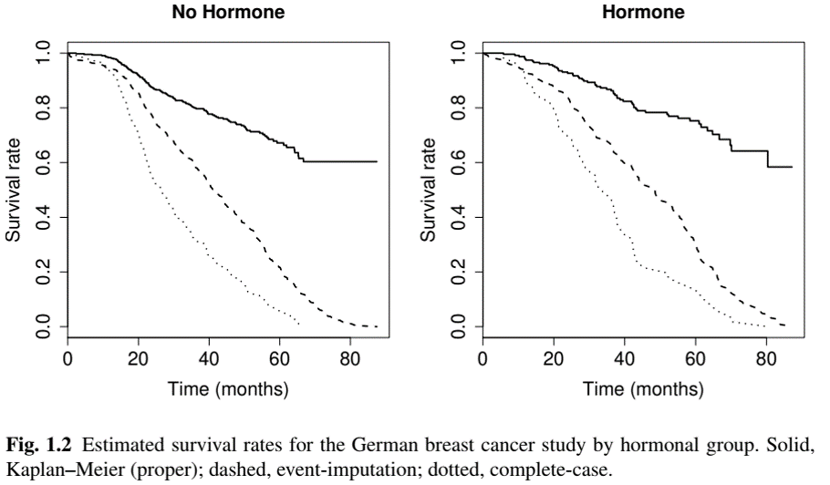
Summarizing Raw Data
Importance of Descriptive Analysis
- Statistical models rely more or less on assumptions
- Good practice to summarize data descriptively as first step
- Get to know the data
- Informs subsequent analysis
- Check balance of baseline characteristics between randomized arms
- “Table 1” in medical research papers
- Two types of summary statistics
- Subject-level characteristics (baseline variables, number of events per subject)
- Event rates (over aggregate length of follow-up)
How to Calculate Event Rate (I)
- Length of follow-up is event-specific
- If an event is by definition “non-recurrent”, its occurrence means patient is no longer at risk for it
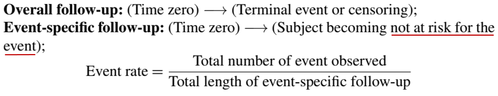
Note
Denominator is called person-year (or person-time) of follow-up.
How to Calculate Event Rate (II)
- Semi-competing risks
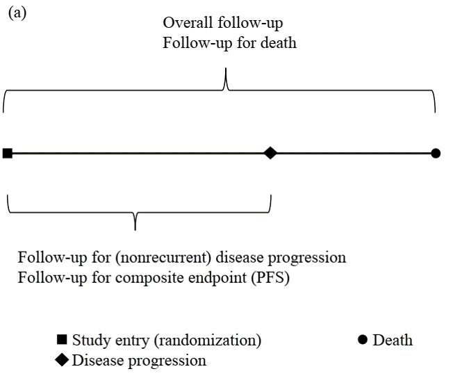
How to Calculate Event Rate (III)
- Recurrent events
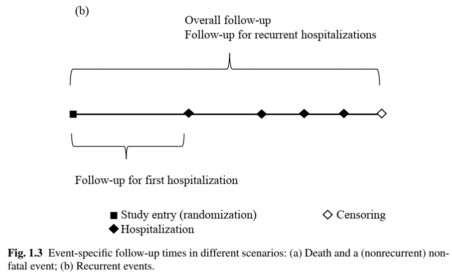
Table One: Example

Conclusion
Chapter Summary
- Types of time-to-event outcomes
- Univariate, recurrent, multivariate/clustered, (semi-)competing risks, repeated measures, multistate processes, and everything in between…
- Common feature: censoring
- Arises if study ends or patient drops out prior to event
- Must be handled with care to avoid false conclusion
- Importance of descriptive analysis
- Event rate \(\to\) attention to denominator
HW1 (Due Feb 7)
- Choose one
- Problem 1.1 (Recommended for PhD in Stats/BDS)
- Problem 1.2
- Problem 1.8 (Attach you annotated code)
- (Extra credit) Problem 1.3
Guidelines for HW
- Present a readable and coherent text to report your methods and results
- Include numerical/graphical results only if they contribute to your narrative
- All tables and figures should be properly titled/captioned, with informative labels/legends
- Use full names instead of abbreviations/acronyms
- E.g., “meno” → “Menopause (yes v no)”; “est” → “Estrogen (fmol/mg)”
- Specify the unit of variable, e.g., “Age (years)”
- See Table 1.11 and Fig. 1.2 for examples
- Append the full code for diagnostic purposes